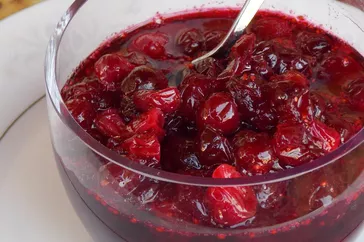

Fresh Cranberry Sauce

This fresh cranberry sauce is the perfect side dish for any holiday meal. It's made with fresh cranberries,
sugar, and orange juice, and it's flavored with cinnamon and cloves. It's the perfect side dish for
Thanksgiving, Christmas, Easter, or any other holiday meal.
Ingredients
- Cranberries
- Sugar
- Orange Juice
- Cinnamon
- Cloves
Steps
- Combine the cranberries, sugar, orange juice, cinnamon, and cloves in a saucepan.
- Bring to a boil over medium-high heat.
- Reduce the heat to medium-low and simmer for 10 minutes.
- Remove from the heat and let cool.